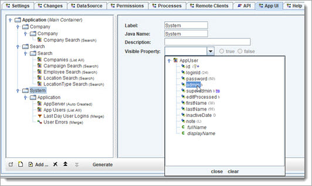

OABuilder lets you define coarse and fine grain access and security - model, objects, links, properties, methods, etc.
Let's go back to the Model UI and add a security setting to the "System" button, so that only Admin users can use it. The property Admin in User is used for this.

We will show more on security as we move forward.